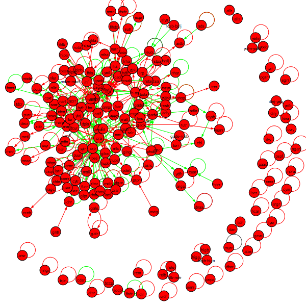

Software Tutorial: Looking for Loops in Transcription Factor Networks
In this tutorial, we will build a Jupyter Notebook to analyze loops in the E. coli transcription factor network, which can be downloaded here. If you would like to jump to the end of the analysis, you can download the complete Jupyter Notebook here.
You will also need the following helper file: Python File
Before running this tutorial, make sure that the following software and packages are installed. Warning: Be careful of the igraph installation and follow the website instructions carefully. When installing via pip or conda, specify “python-igraph” instead of “igraph”.
| Installation Link | Version1 | Check Install |
|---|---|---|
| Python3 | 3.7 | python –version |
| Jupyter Notebook | 4.4.0 | jupyter –version |
| python-igraph | 0.8.0 | conda list or pip list |
Create a blank Jupiter notebook titled loops.ipynb and start editing this file below. First, we import the transcription factor network and see how many nodes and edges there are, as well as count the number of loops.
# NOTE: when installing via pip or conda, install python-igraph
from igraph import *
from network_loader import *
import random
txt_file = 'network_tf_tf_clean.txt'
network, vertex_names = open_network(txt_file)
# how many nodes & edges
print("Number of nodes: ", len(network.vs))
print("Number of edges: ", len(network.es))
print("Number of self-loops: ", sum(Graph.is_loop(network)))
If you run your notebook, you should obtain the following statistics.
- Number of nodes: 197
- Number of edges: 477
- Number of self-loops: 130
We can also create a visualization of the network by adding the following line of code to our network.
plot(network, vertex_label=vertex_names, vertex_label_size=8,
edge_arrow_width=1, edge_arrow_size=0.5, autocurve=True)
Running the notebook now produces the following network.

Our plan is to compare this network against a random network. The following code will call a function from a package to generate a random network with 197 nodes and 477 edges and plot it. It uses a built in function called random.seed() that takes an integer as input and uses this function to initiate a (pseudo)random number generator that will allow us to generate a random network. There is nothing special about the input value 42 here – or is there?
random.seed(42)
g = Graph.Erdos_Renyi(197,m=477,directed=True, loops=True)
plot(g, edge_arrow_width=1, edge_arrow_size=0.5, autocurve=True)
The resulting network is shown in the figure below.

The question is how many edges and self-loops this network has, which is handled by the following code.
# how many nodes & edges
print("Number of nodes: ", len(g.vs))
print("Number of edges: ", len(g.es))
print("Number of self-loops: ", sum(Graph.is_loop(g)))
This code produces the following statistics for the random network.
- Number of nodes: 197
- Number of edges: 477
- Number of self-loops: 5
The number of self-loops is significantly lower in the random network compared to the real transcription factor network.
STOP: Change the input integer to random.seed to any integer you like. How does it affect the number of nodes, edges, and self-loops? Try changing the input to a few different values.
Regardless of what seed value we use, we can confirm that the number of self-loops expected in a random graph is significantly lower than in the real E. coli network. Back in the main text, we will discuss this significance and then see if we can determine why autoregulation has arisen.
-
Other versions may be compatible with this code, but those listed are known to work for this tutorial. ↩